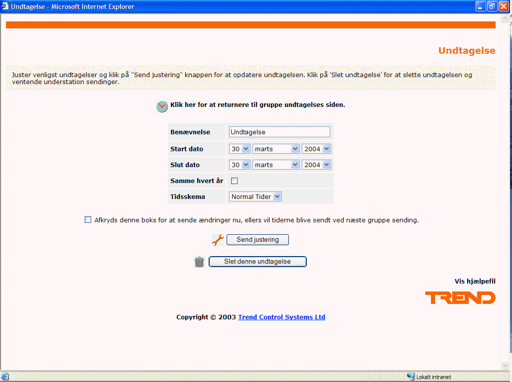

Områder kan indstilles med andre tidspunkter end de normale driftstider, f.eks. for feriedage. Dette gøres ved at tilføje en undtagelse til den kalendergruppe, der er forbundet til den tidszone, der styrer driftstiderne for netop det område.
Sådan tilføjes en undtagelse:
1 Se undtagelserne for den kalendergruppe, hvortil undtagelsen skal tilføjes, som beskrevet i kapitlet ‘Se Undtagelser’ i denne vejledning.
2 Klik på ‘Tilføj ny undtagelse’. Undtagelsen tilføjes.
3 Klik på ‘Undtagelse’ ved siden af den undtagelse, der skal tilføjes. Et display fremkommer, der ligner den vist nedenfor.

4 Indtast undtagelsens navn i boksen ‘Benævnelse’.
5 Angiv den dato, hvor undtagelsen skal bruges først, ved at vælge den ønskede dato, måned og år fra boksene modsat ’Startdato’.
6 Angiv den dato, hvor undtagelsen skal bruges sidst, ved at vælge den ønskede dato, måned og år fra boksene modsat ’Slutdato’.
7 Hvis undtagelsen skal gentages hvert år, afkrydses () boksen ‘Samme hvert år’.
8 Angiv skabelonen, der skal give tidspunkterne, fra listen i boksen ‘Tidsskema’. Denne liste indeholder alle kalendergruppens skabeloner.
9 Klik på ‘Send justeringer’.
Vend tilbage til listen over gruppens undtagelser ved at klikke på ‘Klik her for at vende tilbage til gruppens undtagelsesside’.
Undtagelserne kan redigeres på samme måde.